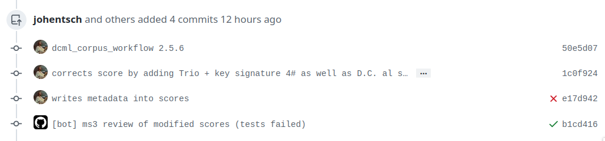

DCML annotation workflow¶
Contents
Note
It is of utmost importance that annotators have a basic understanding of version control and branching via Git before they get familiar with the DCML annotation workflow. The Quick reference below contains the bare minimum of what annotators need to know, but if you’re completely new to Git, please make sure to read, watch, or do a couple of tutorials online.
Short summary¶
Short Summary
Annotator:
creates a new branch (splitting off of
main!) named after the file to be annotatedpushes annotations and corrects automatically detected errors
creates Pull Request (PR)
Reviewer:
merges annotator’s PR, and then merges the automatically created files back into the annotation branch
reviews the annotations and commits every change separately
creates PR and requests a review by the annotator
Annotator:
Pulls the changes and goes through reviewer’s commits in the PR
in case of disagreement, enters into discussion with reviewer until consensus is reached
pushes the respective changes and merges PR
More details can be found below.
Annotating¶
- Head to your local clone of the repository in which you want to annotate a piece and update the main branch.
git checkout main git pull
- Create a new branch that has exactly the same name as the file you are going to annotate.
In this example, we want to annotate the first movement of Corelli’s first trio sonata which is called
op01n01a.mscx, so we do:git checkout -b op01n01a
- Annotate the piece.
Open
op01n01a.mscxwith the latest version of MuseScore and insert your labels while saving the file from time to time. Don’t forget to create the following metadata fields by going through the menuFile -> Score Properties...:annotators(plural form!): your nameharmony_version: version of the annotation standard you are using (currently 2.3.0)

Entering metadata in MuseScore¶
- Commit your changes locally and describe the commit in the commit message.
git add -A git commit -m "annotated mm. 1-15"
Hint
Since you’ll use these commands quite a lot, you might want to create aliases, i.e., shortcut commands, for example
gaandgc. A web search for “create alias [your operation system]” will tell you how.Other examples for meaningful commit messages could be
"annotated the entire movement"or"fixed syntax error in m. 17"- Push your commits to GitHub and check if syntactical errors are detected.
git push
Note
At the first time you will be asked to connect your new local branch to GitHub using the command
git push --set-upstream origin op01n01aor whatever the name of the new branch is.Everytime you push your commits to GitHub, your new labels will be checked automatically and you can see immediately if there are any syntactic errors. Simply head to the GitHub repository and click on the
Actionstab. There you will see your last commit with a small coloured symbol:- yellow
Check in progress (wait a couple of seconds)
- green
Everything OK
- red
Syntactical error(s) detected
The last commit listed in the
Actionstab with the red icon symbolizing that the syntax check failed.¶
- If the syntax check fails, correct all errors in your local MuseScore file and commit them, again with an explanatory commit message.
Still under the
Actionstab, click on the failed syntax check and then onperform_checkClick on “perform_check”¶
Scroll down until you see the output of the checking algorithm:
Code output; syntactical errors listed at the end¶
The table shows the filename
fnames, the measure countMCwhich corresponds to the bar number that MuseScore displays in the status bar on the bottom left (not always identical to the measure number (MN) in the score), the incorrect label’s offset from the barline,mc_onset, measured in fractions of a whole note, and the incorrect label. From here on, simply correct the labels, commit and push again, and the check should pass this time.- Once all your labels are syntactically correct, create a Pull Request.
There are (at least) three different ways for creating a Pull Request (i.e. a request for merging your annotations from the new branch into
main):Head to the main page of the GitHub repository where you should see a banner allowing you to quickly create a pull request:

GitHub offering to create a new pull request with the recently pushed annotations¶
Otherwise, select the new branch from the dropdown menu
Selecting a branch on GitHub¶
and click on
Contribute -> Open pull requestOpening a PR directly from the branch.¶
Or, head to the
Pull requeststab, click on “New pull request” and select your branch accordingly, like this:Giving the new pull request a meaningful title¶
{kind=link}
{kind=link}
{kind=link}
Give the pull request a meaningful name and feel free to add anything worth knowing below. Once you confirm with
the green button “Create pull request”, you’re done. In case more pieces were commissioned to you, you can continue
annotating, but make sure to create the new branch for the next piece after checking out and updating main first!
Upgrading annotations¶
Upgrading an existing set of annotations created under an older version of the DCML annotation standard roughly follows the same workflow as the creation of new labels above. The main difference is that during the upgrade, you commit your changes individually, justifying each of them in a commit message starting with the respective measure number.
- Create a new branch and adapt the metadata.
As an example, let’s upgrade the labels of
op01n06a.mscxfrom version 2.1.1 to 2.3.0. In this screencast, the score is already open and you see how the metadata is updated and committed to a new branch calledop01n06a. Note that the commandsgaandgcare aliases, i.e. shortcut commands, which stand forgit add -Aandgit commit -mrespectively.Updating the metadata reflecting the version upgrade. The screencast starts at
cd corelli.¶As you can see, the metadata field
annotatorsis updated in a way that the old version is added to the previous annotators and that the upgrader adds themselves to the annotators, indicating the new versions. Since the version upgrade includes a review of the existing labels, they also add their initials to thereviewersfield.- Review and update the labels and commit your changes individually.
The following screencast demonstrates the upgrade process of
op01n06a.mscx. In principle, after every change the file is saved and the change is committed with the measure number and an explanation.Creating individual commits for every change or group of changes. Take note and special care of the annotator’s comments and questions. The screencast produces the syntax error
V6/III(2)(instead ofV6(2)/III) that is automatically detected upon push to GitHub (see screenshot below).¶As you can see, similar changes can be grouped as one commit, as for m. 2. Phrase annotations such as the added curly bracket in m. 1 do not need to be committed individually.
- Push your commits and create a Pull Request
From here on, the procedure is the same as for new annotations, only that the PR will be called something like
Upgraded op06n01a to 2.3.0. Just like for new annotations, your version will be syntactically checked. For example, the mistake in the above screencast will be displayed like this:Automatically detected syntax error from above, as displayed on GitHub.¶
Shortly after opening the PR, an additional review file ending on the suffix
_reviewedwill be created on GitHub and added to the PR, which you can then pull and view locally to see the changes you made.
Reviewing a set of annotations¶
Reviewing a set of new annotations and a set of annotations upgraded to a new version works essentially the same way,
but with one important difference. To review new annotations, you first need to merge the PR into main and create
a new one after you finished your review. For upgraded annotations, this is not necessary and you can push your commits
into the open PR right away. The reason for this is the automatic creation of the _reviewed files,
as explained in the following.
In order for the reviewer or upgrader to comprehend the changes you made during your review, not only do you need
to commit and explain your changes individually (indicating the measure number of the respective change). Also,
an additional copy of the MuseScore file in question will be automatically created where your changes are highlighted
with different colours. The creation of such a _reviewed file depends on the presence of an automatically
extracted TSV file which includes a table with the labels as they were before you made your changes. For new
annotations, this file needs to be generated by merging the PR with the new annotations into main. In the case
of a PR with upgraded labels, the TSV file with the previous labels should already be present, indicated by the fact
that a _reviewed file should already have been pushed into this PR by the ms3-bot (e.g., in the following
screenshot, the commit Added comparison files for review).
Reviewing a new set of annotations¶
- First, open the Pull Request containing the new labels and check if all syntactic errors have been corrected.
As can be seen in the following image, in the PR, all commits made by the annotator and by the ms3-bot are listed, two in this example.
A pull request were some syntactic errors have not been corrected yet.¶
It is important to note that the last commit made by the annotator (
fully annotated op01n01a) has a red cross instead of a green check. Although the last commit by the ms3-bot has a green check, the error persists (bot’s commits are not checked for syntactical correctness). In this case, please leave a comment below, asking the annotator to correct the labels and to let you know once they are done.Danger
It is important to never merge syntactically incorrect labels into
mainbecause such errors would propagate to other branches, causing failed syntax checks for your fellow annotators.- Merge the PR
Once there are no syntactical errors left, take note of the annotator’s comments, if any, to be able to react to them, and click on ‘Merge pull request’. This will trigger the script that extracts the new labels and pushes the corresponding TSV file to the
harmoniesfolder. Go to the main branch and wait about 30 seconds, refreshing the page sporadically to see whether the ms3-bot has made the commit calledAutomatically added TSV files from parse with ms3. Then you’re ready to continue.- Merge the updated
mainbranch into the updated annotation branch. The newly created TSV files needs to be present in the annotation branch where you perform the review. Therefore, assuming you are reviewing
op01n01a.mscx:git checkout main git pull git checkout op01n01a git pull git merge main
- Now you are ready to start your review.
At first you start by adding your initials to the metadata field
reviewers(plural!), comma-separated in case the field is already populated. Doing that, you may also want to check whether the annotator spelled the fieldsannotatorsandharmony_versioncorrectly.Reviewing a new set of annotations means reading through the labels to see whether you agree with each of them on the basis of the annotation tutorial, paying special attention to consistency within the piece and consistency across similar annotated pieces.
For every label where you feel the need to remove, reinsert, or replace it, you do the change directly in the MuseScore file, save it, and commit the alteration giving as a commit message the measure number(s) and your justification. In the case of obvious mistakes, it is enough to indicate the replacement, as in
"4: #viio/V => viio/V". You may indicate commits were your change is a suggestion that you would be happy to discuss by a trailing question mark, e.g."15.2: how about including V65 as an alternative label?". You may also address the comments and questions that the annotator had left with their original PR in commit messages, or you could address them in comments, as explained below. The procedure is technically identical with the example screencast above.Once you are happy with the labels in their entirety, you are ready to push your changes, see whether the syntax check passes, and launch a new Pull Request entitled
Reviewed [file name](you may do this even before the syntax check finishes, since you can always add commits to a PR). While or after opening the PR, please request a review from the annotator through this interface on the right side:
GitHub usually suggests the annotator for a review, otherwise use the menu to select the user handle.¶
Naturally, you may include comments or points worth discussing in the description of your PR. You can also add comments on the bottom of the page, or attach a comment to a certain commit/change to have the changed labels displayed together with your comment. To do that, in the open PR, you click on the commit in question, and, in the particular line in the source code, click the plus symbol, as can be seen in the screenshot below. Be sure to always include a measure number, so that your respondent can find the spot in the MuseScore file.
From here on, monitor your GitHub notifications for reactions to your PR from the annotator. Use the comment function to discuss individual solutions until you find a consensual one for each controversial label. This process usually includes you and the annotator committing further changes to the MuseScore file with expressive commit messages (always including the measure number). In case you are working with the automatically generated
_reviewedfile to display all changes made in the PR, be aware that you never commit changes to this file, since they will be overwritten automatically.In the (rare) case where you would be unable to form a consensus, please include in the discussion a third person of whom you think they could bring in weighty arguments. Another way would be to bring the discussion to a Mattermost channel if you think the question requires a fundamental decision based on a larger consensus.
Once the new annotations correspond to a consensus between you and the annotator, the person who made the last decision in the process merges the PR. As a last step, go to the main branch, wait for the automatic
Automatically added TSV files from parse with ms3commit, and check if the corresponding table row in the README got updated correctly (otherwise, the metadata fields in the MuseScore file were not correctly populated). The piece has now been finalized and is ready for eventual publication. Thank you!
Reviewing a set of upgraded annotations¶
- Making use of the
_reviewedfile. In the case that existing labels were upgraded, the corresponding TSV file was already present in the
harmoniesfolder, meaning that after every push into the open PR, ms3-bot updates the_reviewedfile to reflect all changes made within the PR. This means that for starting the review, you can checkout and pull the corresponding branch and view the file to see all changes made by the upgrader. Once you commit your changes on top, the file will be updated to reflect the changes between the deprecated labels (those that the upgrader updated) and the final version after your review. If you were to instead generate a file reflecting only the differences before and after your review, you would have to follow the steps in the previous section, i.e. merge the PR and open a new one.- Review the labels
The procedure is essentially the same as the one for reviewing new annotations. The difference is that you focus more on the labels changed by the upgrader, exercising particular care for potential inconsistencies that might have arisen; for example by applying a change to one place but not to an analogous one; or by having missed a subtle aspect in the previous, replaced label, that actually made for an ideal solution; etc.
Reacting to a review & reaching expert consensus¶
Once your file(s) got reviewed, the reviewer creates a pull request (PR) and requests your review. You should receive an e-mail notification, if not, please check your GitHub settings. Now your task is to go through all changes and see whether you agree with all of them. Here is how:
How to review a review¶
Open the PR from your notification e-mail or go to GitHub and open the Pull requests tab where you should see it.
The PR lets you inspect all changes and start discussions. Most importantly, after opening it, you will see all
commits made by the reviewer:
{kind=link}
Clicking on one of them will show you the corresponding changes in the MuseScore file. But it might be hard for you to assess the changes without looking at the actual music. Therefore:
The last commit, called “Added comparison files for review”, was made automatically by ms3-bot,
creating an additional MuseScore file with the suffix _reviewed. Therefore, the first thing you want to do to
review the review, is locally checkout and pull the branch corresponding to the PR
(it should be the same you created for annotating). As an example, if in the PR it says
{kind=link}
johentsch wants to merge 2 commits into main from op01n01a¶
it means you do:
git checkout op01n01a
git pull
Now you should have the comparison MuseScore file _reviewed
in your local clone and can open it in MuseScore. It shows unchanged labels in black,
labels removed by the reviewer in red, and labels added by the reviewer in green.
The sole purpose of this file is to help you with the review of the review and will be deleted
at some later point (it is not listed in the metadata either). In case this comparison file (and the corresponding
commit Added comparison files for review) is missing, the reviewer might have made a procedural mistake and
you should ask for it to be created before you review the changes.
How to finish the review of the review¶
Now you can go through the list of commits one by one and check how they play out in the comparison file. For every
change that you agree with, there is nothing you need to do. In cases where you don’t agree, you write a comment
on GitHub (see next subsection) and discuss with the reviewer until you find a solution that satisfies both analytical
views. In addition, you may want to suggest a new label by integrating it in the original file (not the
_reviewed file) and committing the change with a meaningful commit message that includes the measure number
(e.g. "14.4: included my original solution V43(4) as an alternative solution").
Once you push the changes, they will be included into the PR and the comparison file will be updated accordingly.
As soon as the original file contains a set of annotations that you and the reviewer agree to be the best possible
solution, the person who made the last
decision in the process merges the PR. As a last step, go to the main branch, wait for the automatic
Automatically added TSV files from parse with ms3 commit, and check if the corresponding table row in the
README got updated correctly (otherwise, the metadata fields in the MuseScore file were not correctly populated).
The piece has now been finalized and is ready for eventual publication. Thank you!
How to start a discussion¶
To start a discussion, click on the commit you disagree with. On the left you see in red your previous version and on the right, in green, the changes made by the reviewer. Hovering over the code lines, you will see a blue plus that lets you add your comment. It is important that you add the measure number so that the reviewer can find the spot and react to your comment.

Starting a discussion by commenting the reviewer’s commit¶
The comments and resulting discussions will be visible in the PR’s “Conversation” tab (under the list of commits). Don’t forget to press the Subscribe button on the right to get informed about reactions to your comments.
Quick Git Reference¶
Git is a version control system generally controlled via the command line. GitHub is a hosting service for remote Git repositories. Since the DCML hosts data on GitHub, a basic understanding of the Git workflow is relevant for annotators and reviewers. There are plenty of resources (for example these videos or this slideshow) for learning Git on the web, so this is just a very quick guide.
Navigating in the command line
In case you have never used the command line, you need to know that to run any git command (except clone)
you need to “be” within a git directory. Usually, the prompt (everything before the cursor) should tell you,
where “you are”, otherwise try pwd (on Windows: echo %cd%). Use cd <folder_name_or_path> to change directory and ls
(on Windows: dir) to show what is in the current WD (working directory). When typing cd and the first couple
of letters of the folder you want to “go to”, you can press [TAB] to autocomplete.
Installing Git¶
Check in your terminal if Git is already installed:
>>> git --version
git version 2.29.2
If the command fails install Git with your system’s package manger or head to this page for instructions.
Cloning a Repository from GitHub¶
Go to the GitHub repository, click on the Code button and copy the URL:

Then, in your terminal, navigate (cd [folder]) to the place where you want
your local clone of the repository and do a simple git clone [copied URL].
If asked, log in with your GitHub credentials. This copies the entire repository,
including the entire history and all branches to your disk. From now on you will
be constantly harmonizing the history of your local clone with the history of the
‘origin’, i.e. the ‘remote’ repository on GitHub.
Note
In order to cache your credentials, avoiding to re-enter them for a certain period, config your Git, for example, to 3 hours: git config –global credential.helper ‘cache –timeout=10800’
Selecting the right Branch¶
Note that to apply any Git command, you need to navigate to any folder within
your local clone of the repository, otherwise you get fatal: not a git
repository (or any of the parent directories).
Git Branching Primer¶
A Git repository often holds several versions, called ‘branches’, in parallel,
each with their own version history. The way the
Git branching model
is most often used, is that the branch called main (previously master) holds the latest
correct version (production status), whereas all other branches are used for
experimenting and for applying as many changes as you want without changing the
main. Effectively that means that
you apply your changes, ‘commits’, to a different branch: the commits are prepended to this branch’s history;
once you are done and want to integrate, ‘merge’, your branch into the
main, you create a Pull Request (PR);before the merge, the PR should be checked, ‘reviewed’, by someone else than yourself;
if the PR passes all checks and reviews, it can be merged into the main branch, thus synchronising both histories. The merged branch can then be deleted.
What’s my branch?¶
One of the most important Git commands is git status which tells you not only
what branch you are on (which branch is ‘checked out’), but also by how much its
local history deviates from the history of the ‘origin’, i.e. the remote version
of the same branch on GitHub.
>>> git status
On branch main
Your branch is behind 'origin/main' by 2 commits, and can be fast-forwarded.
(use "git pull" to update your local branch)
nothing to commit, working tree clean
This message tells you that when you navigate to your local copy, the files you
see correspond to your local version of the main branch which is currently
missing two changes, ‘commits’, from the origin on GitHub. Git also suggests
to integrate, ‘merge’, these two commits by going git pull.
Changing to a Different Branch¶
Get a list of all available branches: git branch -a. Choose the one where you
want to apply your changes to your local clone, e.g. the branch develop, and
do git checkout [branch], e.g. git checkout develop. If you don’t get any
errors, the files of your local clone magically change to reflect this branch’s
current (local!) state of history. A new git status will tell you whether
the local history diverges from the origin on GitHub.
Creating a new Branch¶
Consider which existing branch your new branch should be a copy of and check it
out, usually main (git checkout main). Then you can simply do
git checkout -b [new_branch_name] to create a new branch. If you want to
upload, ‘push’, the new branch to GitHub, you can do a normal git push and
Git will tell you the command to use, e.g.:
>>> git push
fatal: The current branch new_branch_name has no upstream branch.
To push the current branch and set the remote as upstream, use
git push --set-upstream origin new_branch_name
Applying Changes to the Repository¶
First, decide which branch you want to apply changes to and check it out locally.
Generally speaking, you will never apply changes, ‘commits’, to the main branch.
Every time you have made changes that you want to register as ‘commits’ in your local history, you will be using the same two commands:
git add -A
git commit -m "[COMMIT_MESSAGE]"
As a rule of thumb you should use these commands as often as possible for at least two reasons:
Every change registered as a commit can be reverted individually.
Every commit has a meaningful COMMIT_MESSAGE that explains what has been changed, e.g.
"Changing X, Y and Z, correcting their [PROBLEM]". The more individual changes you commit, the more comprehensible your history will be to others.
In the case of music scores, meaningful commit messages could be:
“Corrected ‘corrupt file’ errors in measures 31, 32, and 37”
“Added missing slurs from PDF”
“updated all annotations to standard v2.2.1”
“corrected syntactically incorrect labels in mm. 1, 17, and 96”
In general, when you commit changes not of a whole piece at once but instead to a couple of measures, please include the measure numbers in the commit message to facilitate review.
Uploading Changes to GitHub¶
Once you have finished your work for the day, you want to upload, ‘push’, all
your registered commits to the branch’s origin on GitHub. First you will make
sure to integrate all commits that other people might have pushed to the remote
branch in between: git pull. Git tries to integrate, ‘merge’, the other
contributors’ changes with your local changes. If you and someone else have made
changes in the same places of the same file, Git will let you know about this
‘merge conflict’ and ask you to resolve all of these conflicts. This is most
conveniently done in a text editor with Git integration (such as Atom) which
lets you navigate from conflict to conflict and make the decision between your
change (“Ours”) and someone else’s change(“Theirs”).
Once the pull succeeded, you can upload via git push.
Applying Changes to the Origin Directly¶
Sometimes when you’re feeling lazy, i.e. very rarely, you may apply changes to the repository’s origin on GitHub directly without taking the usual detour of committing to your local clone and then pushing. This can be done via the GitHub browser interface. Don’t forget to pull such commits to your local clone.
Small Changes to a Text File¶
Once again, make sure you are in the correct branch to apply your changes to by
selecting it from the drop-down menu on the left:
Navigate to the file you want to change and click the edit button: 
Now you may change the file directly in the browser and commit the change;
naturally you will specify a meaningful COMMIT_MESSAGE: 
Overwriting a File with Changes¶
If you want to apply local changes to a file directly, you may drag-and-drop it into GitHub. Once again, don’t forget a meaningful COMMIT_MESSAGE.